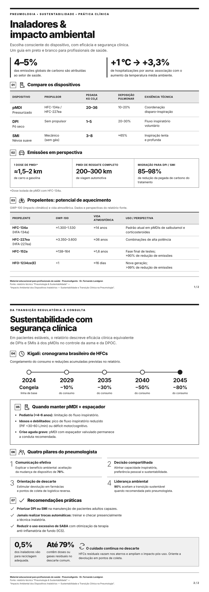

Inaladores e impacto ambiental

Ler o texto do infográfico
Inaladores e impacto ambiental
Escolha consciente do dispositivo, com eficácia e segurança clínica. Guia para profissionais de saúde.
Contexto: clima e saúde respiratória
O setor de saúde responde por aproximadamente 4–5% das emissões globais de carbono. Cada aumento de 1 °C na temperatura média ambiente está associado a um incremento de 3,3% nas hospitalizações por asma.
Compare os dispositivos
| Dispositivo | Propulsor | Pegada de carbono (kg CO₂e) | Deposição pulmonar | Exigência técnica |
|---|---|---|---|---|
| pMDI — pressurizado | HFC-134a / HFC-227ea | 20–36 | 10–20% | Coordenação disparo–inspiração |
| DPI — pó seco | Sem propulsor | 1–5 | 20–30% | Fluxo inspiratório voluntário |
| SMI — névoa suave | Mecânico, sem gás | 3–8 | ≈65% | Inspiração lenta e profunda |
Emissões em perspectiva
- Uma dose isolada de pMDI com HFC-134a equivale às emissões de um carro a gasolina percorrendo aproximadamente 1,5–2 km.
- Um dispositivo pMDI completo de resgate equivale às emissões de uma viagem automotiva de 200–300 km.
- A migração para DPI ou SMI reduz a pegada de carbono do tratamento inalatório em 85–98%, conforme o relatório.
Propelentes e potencial de aquecimento
GWP-100 (impacto climático) e vida atmosférica. Dados e perspectivas do relatório-fonte.
| Propelente | GWP-100 | Vida atmosférica | Uso ou perspectiva |
|---|---|---|---|
| HFC-134a (HFA-134a) | ≈1.300–1.530 | ≈14 anos | Padrão atual em pMDIs de salbutamol e corticosteroides |
| HFC-227ea (HFA-227ea) | ≈3.350–3.600 | ≈36 anos | Combinações de alta potência |
| HFC-152a | ≈138–164 | ≈1,6 anos | Fase final de testes; aproximadamente 90% de redução de emissões |
| HFO-1234ze(E) | <1 | ≈16 dias | Nova geração; mais de 99% de redução de emissões |
Kigali: cronograma brasileiro de HFCs
Congelamento do consumo e reduções acumuladas previstas no relatório.
- 2024: congelamento do consumo, linha de base.
- 2029: redução de 10%.
- 2035: redução de 30%.
- 2040: redução de 50%.
- 2045: redução de 80%.
Quando manter pMDI com espaçador
Em pacientes estáveis, o relatório descreve eficácia clínica equivalente de DPIs e SMIs à dos pMDIs para o controle da asma e da DPOC. A escolha deve respeitar as peculiaridades dos grupos vulneráveis.
- Pediatria (<4–6 anos): limitação do fluxo inspiratório.
- Idosos e debilitados: pico de fluxo inspiratório reduzido (PIF <30–60 L/min) ou déficit motor/cognitivo.
- Crise aguda grave: pMDI com espaçador valvulado permanece a conduta recomendada.
Quatro pilares da atuação do pneumologista
- Comunicação efetiva: explicar o benefício ambiental eleva a aceitação da mudança de dispositivo para 78%.
- Decisão compartilhada: alinhar capacidade inspiratória, preferência pessoal e sustentabilidade.
- Orientação de descarte: estimular a devolução em farmácias e pontos de coleta de logística reversa.
- Liderança ambiental: 90% dos pacientes aceitam a transição sustentável quando recomendada pelo pneumologista.
Recomendações práticas
- Priorizar DPI ou SMI na manutenção de pacientes adultos capazes.
- Jamais realizar trocas automáticas sem treinamento e checagem presencial da técnica inalatória.
- Reduzir o uso excessivo de SABA com otimização da terapia anti-inflamatória de fundo (ICS).
O cuidado continua no descarte
Apenas 0,5% dos inaladores são descartados em programas de reciclagem adequada. Até 79% dos dispositivos contêm doses ou gases residuais no descarte comum. HFCs residuais vazam nos aterros sanitários e ampliam o impacto pós-uso. Oriente a devolução em pontos de coleta.
Material educacional para profissionais de saúde · PneumoAgents · Dr. Fernando Lundgren
Fonte: relatório técnico “Pneumologia & Sustentabilidade” — “Impacto Ambiental dos Dispositivos Inalatórios — Sustentabilidade e Transição Clínica na Pneumologia”.